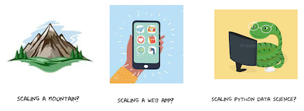

Scaling, in general, is starting out with a small solution and growing it into a bigger solution.

Different people mean different things when they talk about scaling. Do you want to scale a mountain, a web app, or an ML pipeline?
Even when talking about machine learning, scaling can mean different things:~
- Processing more data
- Using a more complex model
- Running more often
Scaling comes at a cost
Scaling requires resources and cost to execute. The cost can be in the form of:~
- Developer time required for code refactoring and optimization for performance
- Performance optimized hardware for accelerated computing
- Distributed processing requires more computers
- Longer wait time for processing more on the same infrastructure
Think before you scale
There are two important things to consider before you invest in scaling:~
What are your goals? You must decide beforehand, what is good enough? Over-engineering is a trap, all engineers are familiar with. Don’t over-engineer!
Measure your code? To treat a patient, a doctor has to determine what the illness is? Likewise, you need to measure your code for bottlenecks before deciding on a scaling strategy. There are many tools that can use to profile your python code. Scalene is one of the most complete measuring tools available at the moment.
How to scale?
Increase code efficiency: Python is designed for ease of use and easy extension, but not performance. As a developer, the onus is on you to do more work so that the application executes less code. Whenever possible use vectorized library functions instead of loops. Python is successful in data science because of the pre-compiled code offered by data-appropriate libraries in the pydata stack such as pandas and numpy.
Adding parallelism: You can achieve parallelism on a single machine or by using multiple machines. In principle, you want to stay on a single machine as much as possible as distributed computing increased complexity because of the following challenges:
- network transfer
- task management
- cluster management
2.1 Hardware accelerators: You can leverage GPUs and TPUs for your ML workflows. Libraries such as CuPy and RAPIDS leverage GPUs. There are non-GPU accelerators also like TPUs offered by Google and Apple Neural Engine.
2.2 Distributed Computing: Going distributed is much harder for the aforementioned reasons but if you have to then you can look at the following projects:
Whichever direction you take on your scaling journey, be sure to pause before you commit, and solve one problem at a time.
I have not covered I/O scaling in this post. That is a conversation for some other day.